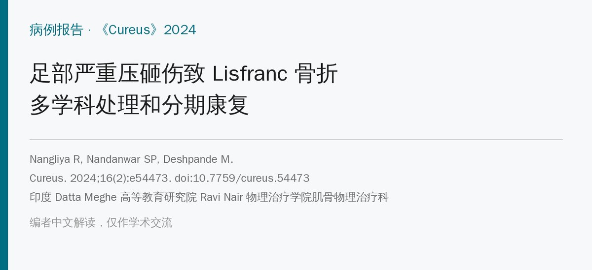
🔖原文信息（编者中文重排）
📚 文献信息
▪ Nangliya R, Nandanwar SP, Deshpande M. Multidisciplinary Management and Rehabilitation of Severe Crush Injury Resulting in Lisfranc Fracture: A Case Report. Cureus. 2024;16(2):e54473. doi:10.7759/cureus.54473
▪ 作者单位：印度 Datta Meghe 高等教育研究院 Ravi Nair 物理治疗学院肌骨物理治疗科
▪ 文章类型：病例报告（1 例）
• 58 岁男性被公交车撞伤左足：Lisfranc 骨折＋全部楔骨和骰骨骨折＋足跟脂肪垫撕脱，伤口 20 cm、骨外露
• 清创＋克氏针固定后，按六期推进物理治疗：先不负重、练髋膝核心，第 6～10 周行走靴下完全负重，第 11 周后脱靴、练踝和步态，第 13 周起加本体感觉
• 康复后：下肢功能量表 26 → 58（满分 80），Olerud-Molander 踝评分 10 → 75，疼痛 8 → 1 分
• 但只有 1 例，方案偏通用模板，评估时间点也前后不一
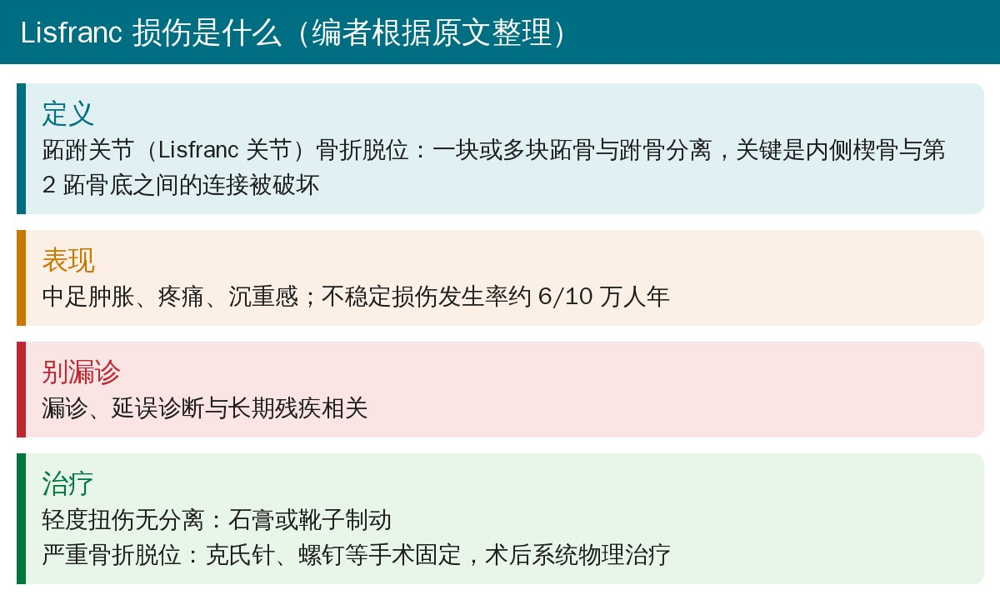
🔖背景（编者根据原文整理）
Lisfranc 关节就是跖跗关节，连接中足的跗骨和前足的跖骨。原文把它的特征概括为内侧楔骨与第 2 跖骨底之间的连接被外伤破坏。原文提到，这类损伤漏诊、延误诊断与长期残疾相关。
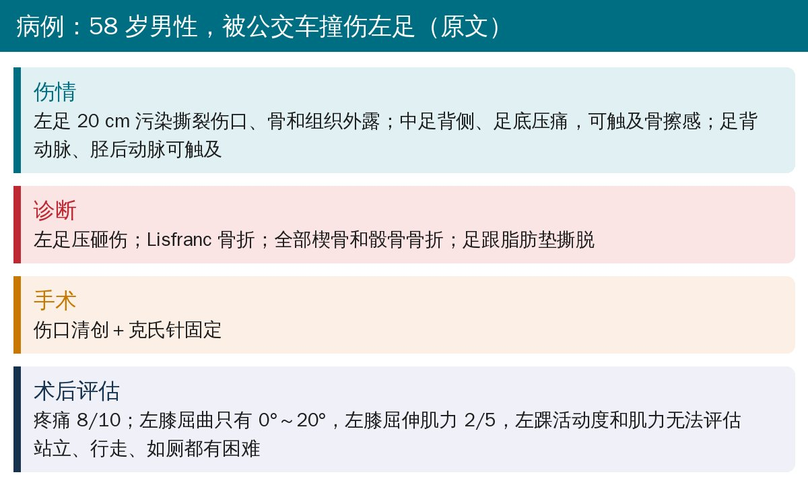
🔖伤情和术后评估（原文）
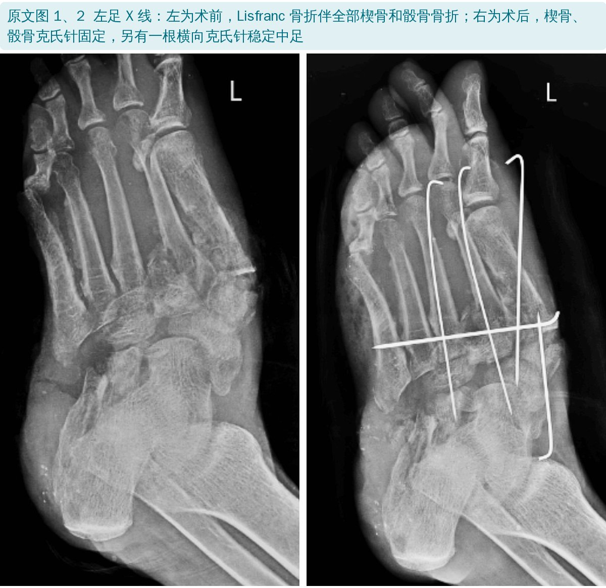
🔖原文图 1、2：术前、术后 X 线
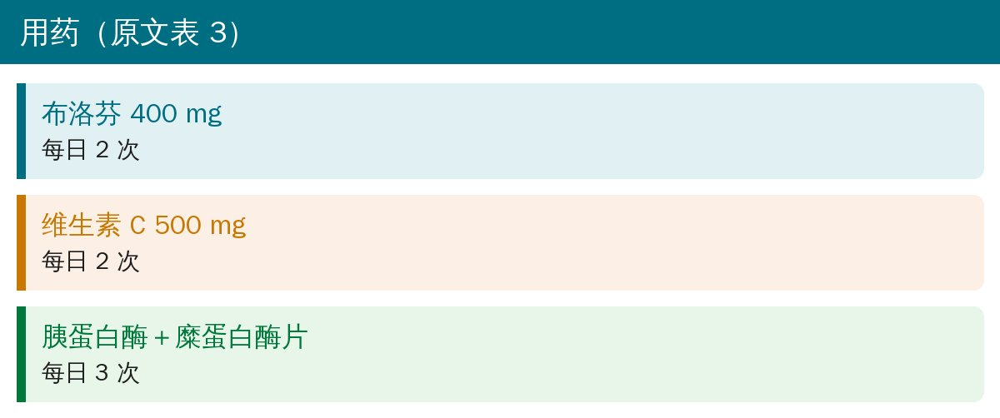
🔖用药（原文表 3）
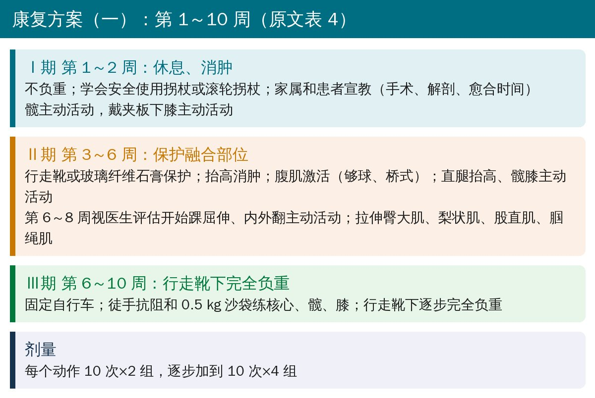
🔖第 1～10 周（原文表 4）
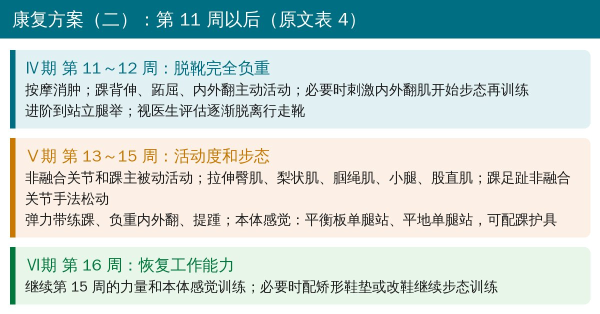
🔖第 11 周以后（原文表 4）
方案的主线是先保护、再负重、后功能：前 10 周在拐杖、行走靴保护下，把力气花在髋、膝和核心上，防止制动带来的肌萎缩和僵硬；踝的主动活动要等医生评估（第 6～8 周）后才开始；脱靴后再练踝、步态和本体感觉。
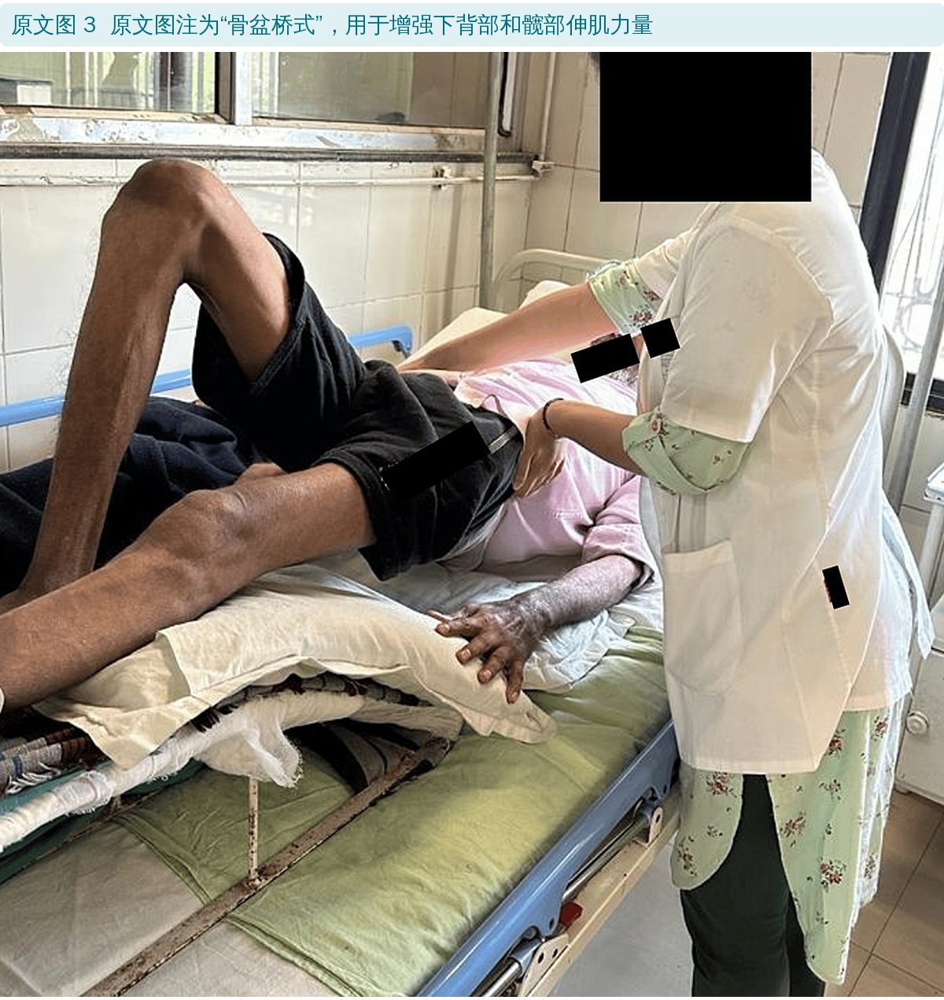
🔖原文图 3
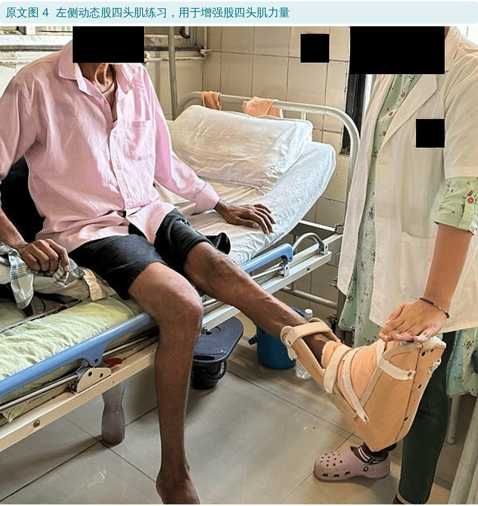
🔖原文图 4：动态股四头肌练习
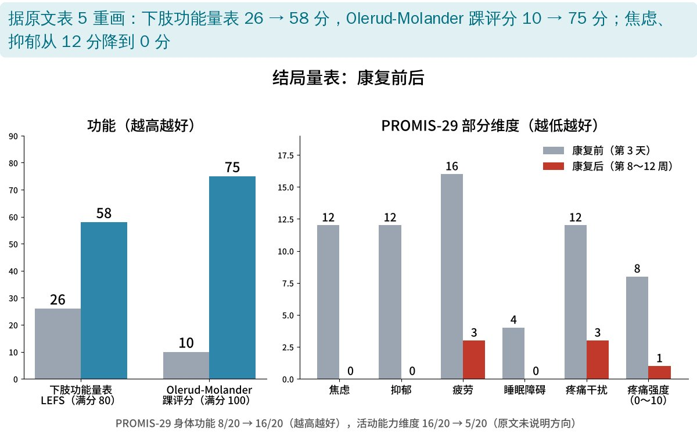
🔖结局量表变化（据原文表 5 重画）
原文表 6、7：左下肢肌力和活动度（康复前 → 康复后）
| 项目 | 康复前 | 康复后 |
|---|---|---|
| 左膝屈曲 | 0°～20° | 0°～100° |
| 左踝背伸 | 0°～5° | 0°～15° |
| 左踝跖屈 | 0°～10° | 0°～40° |
| 左髋屈曲 | 0°～105° | 0°～115° |
| 左膝屈伸肌力 | 2/5 | 4/5 |
| 左踝背伸、跖屈肌力 | 2/5 | 4/5 |
| 左髋各组肌力 | 3/5 | 5/5 |
值得注意的是，原文记录的右侧（未受伤侧）髋、膝、踝肌力在康复前也都只有 3/5，康复后到 5/5。原文没有解释原因，但提示评估和训练不能只盯着患侧。
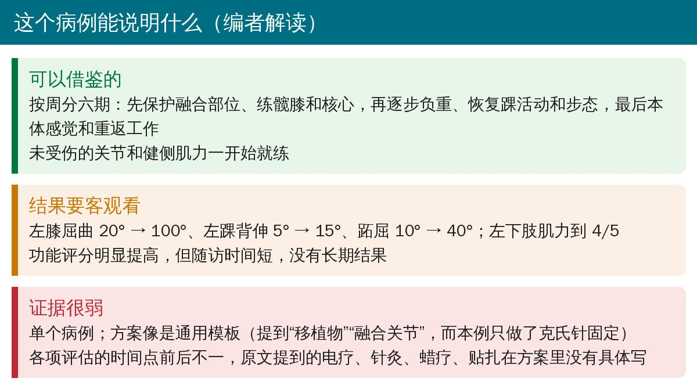
🔖编者解读
• 单个病例、没有对照，随访时间短
• 康复方案提到“移植物”“融合关节”，像是 Lisfranc 融合术后的通用方案，和本例克氏针固定并不完全对应
• 引言和讨论提到的电疗、针灸、蜡疗、贴扎，在具体方案里没有写剂量和时间
• 评估时间点前后不一：表 5 写第 3 天和第 8～12 周，表 6 写第 7 天和第 3 周，表 7 写第 7 天和第 5 周
• 表 1 说术后左踝活动度无法评估、表 2 左踝肌力为“－”，表 6、7 的康复前数据却是背伸 5°、跖屈 10°、肌力 2/5
• 摘要写“乘用车事故”，正文写“被公交车撞伤”
• Lisfranc 骨折术后早期不负重，但髋、膝、核心和健侧都要尽早练
• 踝的主动活动和负重进度以手术医生的评估为准；行走靴下完全负重 → 脱靴 → 步态和本体感觉逐步过渡
• 评估不只看踝：膝屈曲、健侧肌力、焦虑抑郁等都可能受影响
欢迎关注骨科康复小黄公众号，获取更多物理治疗的专业知识！
📄参考文献：
Nangliya R, Nandanwar SP, Deshpande M. Multidisciplinary Management and Rehabilitation of Severe Crush Injury Resulting in Lisfranc Fracture: A Case Report. Cureus. 2024;16(2):e54473. doi:10.7759/cureus.54473
原文以知识共享署名 4.0（CC BY 4.0）协议开放获取。原文图 1～4 引自原文，中文说明见图注；结局量表图由编者根据原文表 5 重画；整理卡为编者根据原文撰写。